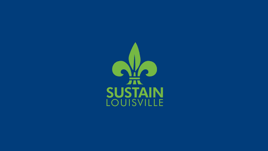
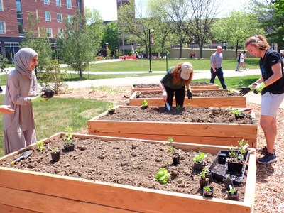

Policymaking
Considering all the inequalities that exist in Louisville’s food system in terms of the food production, food manufacturing, and food retailing phases, the Louisville city government has played a significant role in attempting to mitigate such inequalities. Whether the solutions it has put forward are effective is debatable. See research here, here, and here that deliberates the efficacy of Louisville’s various food system-related policies.
Nonetheless, recently, Louisville’s city government has stepped up its efforts to address food system inequalities at all parts of the food supply chain. Check out the slideshow below for three examples of this.
1 / 4

How has Louisville's Metro Council responded to rampant inequality in the food system as part of its broader sustainability initiative?
2 / 4

Food Manufacturing/Proecssing: In 2020, Louisville Metro's Public Health department announced an investigation into unsanitary working conditions in one of Louisville's largest meatpacking plants.
3 / 4
Food Retail: In 2022, Louisville invested millions to build a grocery store in the poor, majority-minority neighborhod of Smoketown, which did not have a single store of such sort for many decades.
4 / 4

Food Production: In 2022, Louisville changed the Land Development Code to streamline the approval process for community gardens, theoretically allowing communities in the poor & minority census tracts of the West End to acquire vacant lots and garden easily.